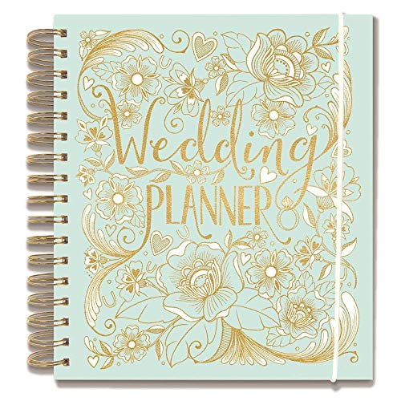
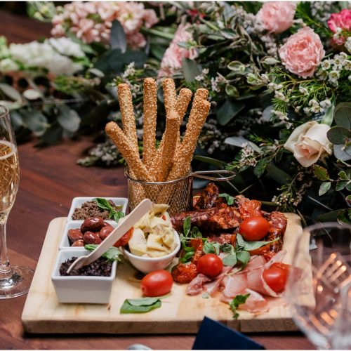
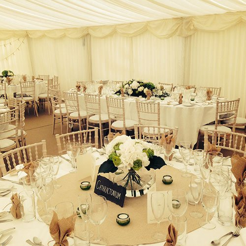
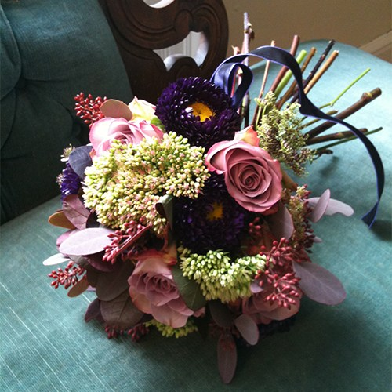
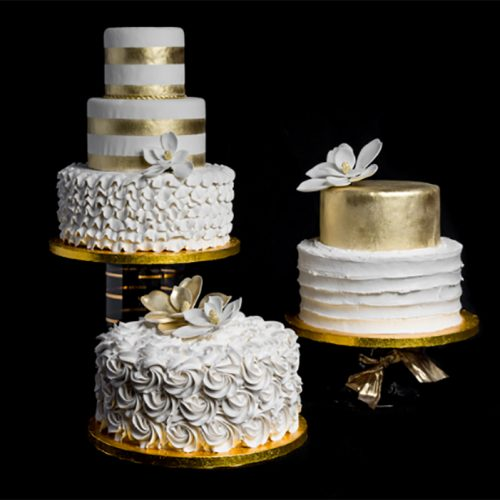
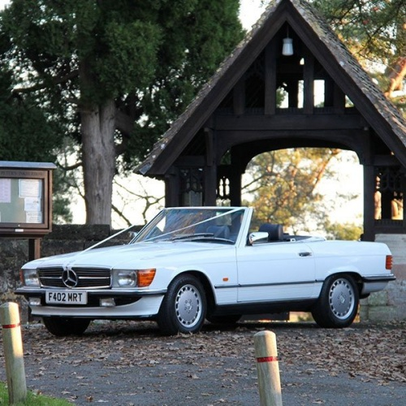
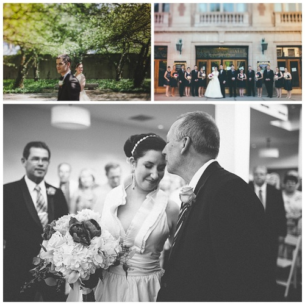

With our wedding planning packages to suit all your budget and lifestyle requirements we are able to offer a varied range of packages to help create your magical day. We are able to select and recommend venues, suppliers to reflect your dream day. From venues to flowers, cakes, wedding attire and everything you need. We work around you and your lifestlye so that you remain in full control in every stage of your planning.

Wedding Planning
We pride ourselves on our dedicated team who provide outstanding event planning and management services for conferences, seminars, workshops, executive meetings, school proms, product launching, inaugural ceremonies, catwalk, baby christening, weddings, receptions, parties, etc.
Our services also include classic decorations, catering for tasty meals that come with starters, main course, and desserts; high-quality music and DJ service, ushering and tight security staff for the smooth running of events to achieve your intended results.
The satisfaction of our clients is the core foundation of our success. We provide quality services value for money.
We have an enthusiastic team of managers, planners, coordinators and crew who pay attention to details to meet the specifications of our customers. We deliver on time with unique services that are difficult to match elsewhere.

Catering
Great food equals happy wedding guests! Here you can find the best wedding catering suppliers all across the country. Remember not all wedding venues will do the catering for your wedding breakfast so if you’re in need of wedding catering services for you big day, this is a good place to start! The food tasting is often one of the wedding planning highlights, so in order to move forward with a caterer make sure to check the following:
Can your caterer specialise in certain types of wedding food? Are they able to accommodate various dietary requirements and will they be able to offer different meal choices to you and to your guests? Are they allowed to provide alcohol will you need to engage with a bar hire company as well? Will they provide cutlery, plates, napkins and full service too?
We often get asked by couples if they need to provide evening food. We always recommend this as your guests are likely to be hungry after they’ve hit the dancefloor so whether it’s nibbles, pizzas, sandwiches or something sweet, evening food is a great idea! Why not check out some of our food trucks and pop ups if your caterer does not offer this within your budget? Remember the average cost of wedding catering in the UK is currently around £7,000 (depends on guest numbers).
Take a look at some of our fantastic wedding catering suppliers above. Make sure to take your time looking through the pictures and the reviews at the bottom of their profiles which are guaranteed to make you ravenous! Worth also noting that some caterers also do wedding cakes which can kill two birds with one stone. Once you’ve understood more of the logistical aspects that each caterer requires in order to deliver a seamless experience, you’re ready for the tasting!

Venue Booking
Securing a wedding venue is usually the best place to start for any couple and ensuring you choose the perfect venue for you is so important, as it will set the tone for the rest of the day. Using Wedding Planner’s search functionality, you can view a wide range of different wedding venue styles across the UK along with all their prices and availability. We have so many different styles to choose from such as castles and barns, to manor houses, hotels and even pubs. You can compare venues by capacity, corkage and types of ceremonies offered along with lots of other key information.ß
With all the details in front of you make sure you think about if the venue suits your theme, if it’s big enough to accommodate your guests and what you are actually getting for your money. A lot of wedding venues don’t have ceremony licenses, so you’ll need to factor in the cost of your ceremony at a separate location if this is the case. Once you’ve made your decision you’ll need to get things booked quickly, as many wedding venues get booked by couples well over 12 months in advance. It is always worth considering flexibility around day and time of year as you may be able to get a better deal and have a stronger negotiating position. We also recommend building a strong relationship with your wedding coordinator at the venue as they are in the position to make your wedding planning that little bit easier. For more information on hiring venues and questions to consider, take a look at Wedding Planner’s inspiration section or get in touch with us directly for our top wedding venue recommendations in your area.

Florist
There’s no better occasion than a wedding to truly appreciate all the gorgeous blooms nature provides! You’ve chosen your venue and you have a theme so it’s time to start thinking about your wedding flowers and other decorations. If you’re a creative individual or couple then this is your time to shine as there’s enormous scope for creativity and style in this part of the planning process.
While you may not know your posies from your peonies, don’t fear because professional wedding florists are here to help you choose the right flowers for your theme. Plus understanding the best season for specific flowers not only affects your ability to get your hands on your favourites but can also have a big impact on the budget! Expect to spend roughly 6% of your budget on flowers so don't be surprised if you're parting with £1,000-£1,500 overall.
Take advantage of the experts we have selected for you. They have years of experience and will be able to help guide you when understanding which flowers will fit best with your wedding look and which combinations will look fantastic in the photographs. Make your bouquet a priority and always try and reuse your flowers to make the most from them, whether that’s redistributing your ceremony flowers into other rooms at the reception or giving them away as thank you gifts at the end of the day.
Enquire now to our fantastic florists near you and chat to them about any unique or unusual wedding flower ideas you may have for your wedding day. Always worth checking if they accept more than one booking on the same day and if they also provide other decorative items such as vases for centerpieces and table linens. Finally, it’s always worth checking that none of your guests are allergic to the flowers you’re choosing especially if there are lots of one type!
Do not worry too much, picking the flowers is supposed to be one of the more enjoyable parts of the wedding planning process so have some fun!

Cakes
In this section you’ll find a whole host of super talented bakers and cake experts all across the land. Use the search tool to select your area and see who will be your star baker for the day! The cutting of the cake in front of your guests is sure to be one of the highlights of the day and the cake tasting before the wedding will be one of the most enjoyable planning experiences that you and your partner are likely to have.
Struggling to choose? Make sure you ask your cake baker what are your filling choices? Why not go for a cake that consists of different fillings from chocolate to carrot cake or Victoria Sponge to traditional fruit cake. More exoctic options like passion fruit may cost a bit extra but it might be worth it just to have something extra unique. Also, remember to ask about the fondant and buttercream options too. The quality of the designs is only getting bigger and better and this should be matched by amazing taste. Why not have a selection of cupcakes to go with the main wedding cake? Worth checking with your baker how long in advance will the cake be ready, how will delivery on the day work and will they be providing a cake stand?
If you don’t have a sweet tooth, you could go for cheese wheels mixed with pork pies? Whatever your tastes, check out some of the fabulous wedding cake designers below and book a tasting session. Just click ‘Get In Touch’ to chat with them about building your unique wedding cake creation! Let the cake tasting tour commence!

Transportation
Most of the time, none of us really think about how we get from A to B, we just jump in a car, get on our bike or look up the train times. On your wedding day, this is unlikely to be an option – think of a white dress on the tube and don’t even get us started on the delays! The bridal dress needs to arrive at the ceremony as white as snow, and you want to make sure everyone arrives on time – with transport booked you will be able to take an hour longer on your eyelashes. So here’s all you need to know about wedding transport to make sure you arrive or leave in style!

Photography
An unforgettable big day, that’s the dream. You want to remember it all - every emotion, every little moment and everyone you shared it with. This is where the wedding photographer comes in. Capturing all those fleeting moments: the tears, the laughs, the genuine look of love between you and your spouse-to-be, the photographer immortalises your story, preserving it for years to come. Choosing someone to create that magic for you can be difficult, so here are some tips on how to do it.
Photographers are artists, and just like any other artist they have their own personal style, a signature look and feel to the photos they create. Choosing a wedding photographer is a lot like getting a tattoo - it lasts a lifetime, you might need to travel (in this case, they might need to travel) and most importantly, you choose someone whose style matches exactly what you want, that way your end goal is aligned. If there is anything you take away from these wedding photography tips, let it be this: make your choice primarily on the photographer’s portfolio. Everything else can come after. Do you want a black and white timeless effect or something a little more vibrant? Do you want more portrait shots or more group photos? Making sure you’re on the same page creates trust - you won’t need to worry on the day whether your moments will be captured the way you want, because they will.
When deciding the style, be sure to ask to see the photographer’s full portfolio, rather than just the ones on their website. It’s only natural that they’ll upload the most stunning photos that’ll bring in more customers, but if the rest isn’t nearly the same quality, there’s an issue. You also need to consider if the photographer’s experience matches up with your wedding. You might love how they capture natural light in incredible picturesque outdoor locations, but if you’re going for an urban city wedding, this technique probably won’t produce the same results. After all, the wedding photography London has to offer would be very different to wedding photography Cornwall-style, or the Lake District.
The photographer’s attitude and personality matter too. You don’t want someone you don’t like in your face stressing you out on your big day. You’ll be around them for most of the day, so it’s important that you click, Photographers each have their own way of doing things, some may like to be a bit more hands-on, posing you and your guests to get the best possible pictures. Some might prefer capturing everything as it naturally happens. Again, this is a factor to consider - do you want those posed shots? There’s no right or wrong answer; it’s a matter of personal preference.